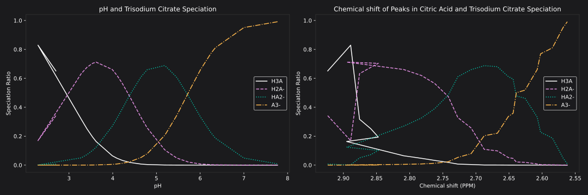
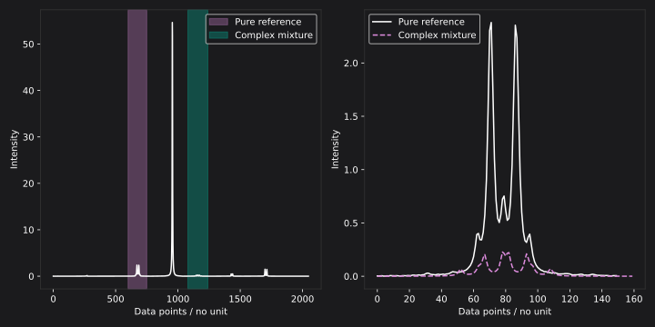

<!DOCTYPE html>
<html lang="en">
  <head>
    <meta charset="utf-8" />
    <meta name="viewport" content="width=device-width, initial-scale=1.0, maximum-scale=1.0, user-scalable=no" />

    <title></title>
    <link rel="stylesheet" href="dist/reveal.css" />
    <link rel="stylesheet" href="css/slidescss.css" id="theme" />
    <link rel="stylesheet" href="plugin/highlight/zenburn.css" />
	<link rel="stylesheet" href="css/layout.css" />
	<link rel="stylesheet" href="plugin/customcontrols/style.css">

	<link rel="stylesheet" href="plugin/reveal-pointer/pointer.css" />


    <script defer src="dist/fontawesome/all.min.js"></script>

	<script type="text/javascript">
		var forgetPop = true;
		function onPopState(event) {
			if(forgetPop){
				forgetPop = false;
			} else {
				parent.postMessage(event.target.location.href, "app://obsidian.md");
			}
        }
		window.onpopstate = onPopState;
		window.onmessage = event => {
			if(event.data == "reload"){
				window.document.location.reload();
			}
			forgetPop = true;
		}

		function fitElements(){
			const itemsToFit = document.getElementsByClassName('fitText');
			for (const item in itemsToFit) {
				if (Object.hasOwnProperty.call(itemsToFit, item)) {
					var element = itemsToFit[item];
					fitElement(element,1, 1000);
					element.classList.remove('fitText');
				}
			}
		}

		function fitElement(element, start, end){

			let size = (end + start) / 2;
			element.style.fontSize = `${size}px`;

			if(Math.abs(start - end) < 1){
				while(element.scrollHeight > element.offsetHeight){
					size--;
					element.style.fontSize = `${size}px`;
				}
				return;
			}

			if(element.scrollHeight > element.offsetHeight){
				fitElement(element, start, size);
			} else {
				fitElement(element, size, end);
			}		
		}


		document.onreadystatechange = () => {
			fitElements();
			if (document.readyState === 'complete') {
				if (window.location.href.indexOf("?export") != -1){
					parent.postMessage(event.target.location.href, "app://obsidian.md");
				}
				if (window.location.href.indexOf("print-pdf") != -1){
					let stateCheck = setInterval(() => {
						clearInterval(stateCheck);
						window.print();
					}, 250);
				}
			}
	};


        </script>
  </head>
  <body>
    <div class="reveal">
      <div class="slides"><section  data-markdown><script type="text/template"><!-- .slide: class="drop" -->
<div class="" style="position: absolute; left: 0px; top: 0px; height: 700px; width: 960px; min-height: 700px; display: flex; flex-direction: column; align-items: center; justify-content: center" absolute="true">

<div class="" style="" drag="100 100">

#### Speciation and Chelation Effects in Citric Acid NMR and Machine Learning Approaches to Complex Mixture Analysis
</div>
</div></script></section><section  data-markdown><script type="text/template"><!-- .slide: class="drop" -->
<div class="" style="position: absolute; left: 0px; top: 0px; height: 700px; width: 960px; min-height: 700px; display: flex; flex-direction: column; align-items: center; justify-content: center" absolute="true">

<div class="" style="position: absolute; left: 0%; top: 0%; height: 10%; width: 100%; display: flex; flex-direction: column; align-items: center; justify-content: flex-start" align="top">

#### Speciation
</div>

<div class="" style="position: absolute; left: 0%; top: 10%; height: 90%; width: 50%; display: flex; flex-direction: column; align-items: center; justify-content: center" >


</div>

<div class="" style="position: absolute; left: 50%; top: 10%; height: 90%; width: 50%; display: flex; flex-direction: column; align-items: center; justify-content: center" >


# [2] Elbagerma et al. 2015
</div>
</div></script></section><section  data-markdown><script type="text/template"><!-- .slide: class="drop" -->
<div class="" style="position: absolute; left: 0px; top: 0px; height: 700px; width: 960px; min-height: 700px; display: flex; flex-direction: column; align-items: center; justify-content: center" absolute="true">

<div class="" style="position: absolute; left: 0%; top: 0%; height: 10%; width: 100%; display: flex; flex-direction: column; align-items: center; justify-content: center" >

#### Chelation
</div>

<div class="" style="position: absolute; left: 0%; top: 20%; height: 80%; width: 100%; display: flex; flex-direction: column; align-items: center; justify-content: flex-end" align="bottom">


# [3] Silwood et al. 2002
</div>
</div></script></section><section  data-markdown><script type="text/template"><!-- .slide: class="drop" -->
<div class="" style="position: absolute; left: 0px; top: 0px; height: 700px; width: 960px; min-height: 700px; display: flex; flex-direction: column; align-items: center; justify-content: center" absolute="true">

<div class="" style="position: absolute; left: 0%; top: 0%; height: 30%; width: 100%; display: flex; flex-direction: column; align-items: center; justify-content: center" >

#### Chemical Shift Fitting Models
</div>

<div class="" style="position: absolute; left: 50%; top: 35%; height: 30%; width: 50%; display: flex; flex-direction: column; align-items: center; justify-content: center" >

Speciation:

`$\delta_{obs,peak}=f_0\delta_0$`
`$+f_1\delta_1+f_2\delta_2+f_3\delta_3$`
</div>

<div class="" style="position: absolute; left: 0%; top: 35%; height: 30%; width: 50%; display: flex; flex-direction: column; align-items: center; justify-content: center" >

Chelation:

`$\delta_{obs,peak}=f_{0}\delta_{L}+f_{1}\delta_{ML}$`
</div>

<div class="" style="position: absolute; left: 0%; top: 70%; height: 30%; width: 100%; display: flex; flex-direction: column; align-items: center; justify-content: center" >

Integrated:

`$\delta_{obs,peak}=f_6(f_{0}\delta_{0}+f_{1}\delta_{1}+f_{2}\delta_{2}+f_{3}\delta_{3})+f_{4}\delta_{4}+f_{5}\delta_{5}$`
</div>
</div></script></section><section  data-markdown><script type="text/template"><!-- .slide: class="drop" -->
<div class="" style="position: absolute; left: 0px; top: 0px; height: 700px; width: 960px; min-height: 700px; display: flex; flex-direction: column; align-items: center; justify-content: center" absolute="true">

<div class="" style="position: absolute; left: 0%; top: 0%; height: 10%; width: 100%; display: flex; flex-direction: column; align-items: center; justify-content: center" >

#### Chelation Fitting Model
</div>

`$\delta_{obs,peak}=(1-f_{ML})\delta_L+f_{ML}\delta_{ML}$`

`$f_{ML} = [ML]/[L]_t$`

`$ML = \frac{-a\;+\;k_f\,\bigl([M]_t + [L]_t\bigr)\;+\;1}{2\,k_f}$`

`$a=\sqrt{{k_f}^{2}\,\bigl([M]_t - [L]_t\bigr)^{2} + 2\,k_f\,\bigl([M]_t + [L]_t\bigr) + 1}$`
</div></script></section><section  data-markdown><script type="text/template"><!-- .slide: class="drop" -->
<div class="" style="position: absolute; left: 0px; top: 0px; height: 700px; width: 960px; min-height: 700px; display: flex; flex-direction: column; align-items: center; justify-content: center" absolute="true">

<div class="" style="position: absolute; left: 0%; top: 0%; height: 10%; width: 100%; display: flex; flex-direction: column; align-items: center; justify-content: center" >

#### Speciation Spectra
</div>

<div class="" style="position: absolute; left: 0%; top: 10%; height: 90%; width: 100%; display: flex; flex-direction: column; align-items: center; justify-content: center" >


<!-- speciation spectra -->
</div>
</div></script></section><section  data-markdown><script type="text/template"><!-- .slide: class="drop" -->
<div class="" style="position: absolute; left: 0px; top: 0px; height: 700px; width: 960px; min-height: 700px; display: flex; flex-direction: column; align-items: center; justify-content: center" absolute="true">

<div class="" style="position: absolute; left: 0%; top: 0%; height: 10%; width: 100%; display: flex; flex-direction: column; align-items: center; justify-content: center" >

#### Result of Speciation against Chemical Shift
</div>

<div class="" style="position: absolute; left: 0%; top: 20%; height: 80%; width: 100%; display: flex; flex-direction: column; align-items: center; justify-content: center" >



</div>
</div></script></section><section  data-markdown><script type="text/template"><!-- .slide: class="drop" -->
<div class="" style="position: absolute; left: 0px; top: 0px; height: 700px; width: 960px; min-height: 700px; display: flex; flex-direction: column; align-items: center; justify-content: center" absolute="true">

<div class="" style="position: absolute; left: 0%; top: 0%; height: 10%; width: 100%; display: flex; flex-direction: column; align-items: center; justify-content: center" >

#### Chelation Spectra
</div>

<div class="" style="position: absolute; left: 0%; top: 20%; height: 80%; width: 100%; display: flex; flex-direction: column; align-items: center; justify-content: center" >


</div>
</div></script></section><section  data-markdown><script type="text/template"><!-- .slide: class="drop" -->
<div class="" style="position: absolute; left: 0px; top: 0px; height: 700px; width: 960px; min-height: 700px; display: flex; flex-direction: column; align-items: center; justify-content: center" absolute="true">

<div class="" style="position: absolute; left: 0%; top: 0%; height: 10%; width: 100%; display: flex; flex-direction: column; align-items: center; justify-content: center" >

#### Result of Chelation against Chemical Shift
</div>

<div class="" style="position: absolute; left: 0%; top: 10%; height: 90%; width: 100%; display: flex; flex-direction: column; align-items: center; justify-content: center" >


</div>
</div></script></section><section  data-markdown><script type="text/template"><!-- .slide: class="drop" -->
<div class="" style="position: absolute; left: 0px; top: 0px; height: 700px; width: 960px; min-height: 700px; display: flex; flex-direction: column; align-items: center; justify-content: center" absolute="true">

<div class="" style="position: absolute; left: 0%; top: 0%; height: 10%; width: 100%; display: flex; flex-direction: column; align-items: center; justify-content: center" >

#### Integrated Model Fitting Predictions
</div>

<div class="" style="position: absolute; left: 0%; top: 10%; height: 10%; width: 100%; display: flex; flex-direction: column; align-items: center; justify-content: center" >

`$\delta_{obs,peak}=f_6(f_{0}\delta_{0}+f_{1}\delta_{1}+f_{2}\delta_{2}+f_{3}\delta_{3})+f_{4}\delta_{4}+f_{5}\delta_{5}$`
</div>

<div class="" style="position: absolute; left: 0%; top: 20%; height: 80%; width: 100%; display: flex; flex-direction: column; align-items: center; justify-content: center" >


</div>
</div></script></section><section  data-markdown><script type="text/template"><!-- .slide: class="drop" -->
<div class="" style="position: absolute; left: 0px; top: 0px; height: 700px; width: 960px; min-height: 700px; display: flex; flex-direction: column; align-items: center; justify-content: center" absolute="true">

<div class="" style="position: absolute; left: 0%; top: 0%; height: 10%; width: 100%; display: flex; flex-direction: column; align-items: center; justify-content: center" >

#### Machine Learning Neural Networks in Classification and Concentration Identification of Complex Mixtures
</div>

<div class="" style="position: absolute; left: 0%; top: 10%; height: 90%; width: 50%; display: flex; flex-direction: column; align-items: center; justify-content: center" >


</div>

<div class="" style="position: absolute; left: 50%; top: 10%; height: 90%; width: 50%; display: flex; flex-direction: column; align-items: center; justify-content: center" >


</div>

Notes:

Media/Slides 2025-10-06 14.34.23.excalidraw
Media/Slides 2025-10-06 14.43.16.excalidraw
Media/Slides 2025-10-06 15.02.11.excalidraw
</div></script></section><section  data-markdown><script type="text/template"><!-- .slide: class="drop" -->
<div class="" style="position: absolute; left: 0px; top: 0px; height: 700px; width: 960px; min-height: 700px; display: flex; flex-direction: column; align-items: center; justify-content: center" absolute="true">

<div class="" style="position: absolute; left: 0%; top: 0%; height: 10%; width: 100%; display: flex; flex-direction: column; align-items: center; justify-content: center" >

#### Comparative Model Input Structure
</div>

<div class="" style="position: absolute; left: 0%; top: 10%; height: 90%; width: 100%; display: flex; flex-direction: column; align-items: center; justify-content: center" >



</div>
</div></script></section><section  data-markdown><script type="text/template"><!-- .slide: class="drop" -->
<div class="" style="position: absolute; left: 0px; top: 0px; height: 700px; width: 960px; min-height: 700px; display: flex; flex-direction: column; align-items: center; justify-content: center" absolute="true">

<div class="" style="position: absolute; left: 0%; top: 0%; height: 10%; width: 100%; display: flex; flex-direction: column; align-items: center; justify-content: center" >

#### Single Metabolite Results
</div>

<div class="" style="position: absolute; left: 0%; top: 10%; height: 90%; width: 100%; display: flex; flex-direction: column; align-items: center; justify-content: center" >


</div>
</div></script></section><section  data-markdown><script type="text/template"><!-- .slide: class="drop" -->
<div class="" style="position: absolute; left: 0px; top: 0px; height: 700px; width: 960px; min-height: 700px; display: flex; flex-direction: column; align-items: center; justify-content: center" absolute="true">

<div class="" style="position: absolute; left: 0%; top: 0%; height: 10%; width: 100%; display: flex; flex-direction: column; align-items: center; justify-content: center" >

#### Comparative Model
</div>

<div class="" style="position: absolute; left: 0%; top: 10%; height: 90%; width: 100%; display: flex; flex-direction: column; align-items: center; justify-content: center" >


</div>
</div></script></section><section  data-markdown><script type="text/template"><!-- .slide: class="drop" -->
<div class="" style="position: absolute; left: 0px; top: 0px; height: 700px; width: 960px; min-height: 700px; display: flex; flex-direction: column; align-items: center; justify-content: center" absolute="true">

#### References

# [1] National Center for Biotechnology Information (2025). PubChem Compound Summary for CID 31348, Citrate. Retrieved September 11, 2025 from https://pubchem.ncbi.nlm.nih.gov/compound/Citrate.

# [2] Elbagerma, Mohamed & Alajtal, A. & Edwards, H. & Azimi, Gholamhassan & Verma, Keshav Deo. (2015). RAMAN SPECTROSCOPIC AND POTENTIOMETRIC STUDIES OF ACIDITY LEVEL AND DISSOCIATION OF CITRIC ACID IN AQUEOUS SOLUTION. Journal of Applied Chemical Science International. 2. 1-11. https://www.researchgate.net/publication/270958347

# [3] Silwood, C.J., Grootveld, M. & Lynch, E. 1H NMR investigations of the molecular nature of low-molecular-mass calcium ions in biofluids. _J Biol Inorg Chem_ **7**, 46–57 (2002). https://doi.org/10.1007/s007750100264

#### Github
</div></script></section></div>
    </div>

    <script src="dist/reveal.js"></script>

    <script src="plugin/markdown/markdown.js"></script>
    <script src="plugin/highlight/highlight.js"></script>
    <script src="plugin/zoom/zoom.js"></script>
    <script src="plugin/notes/notes.js"></script>
    <script src="plugin/math/math.js"></script>
	<script src="plugin/mermaid/mermaid.js"></script>
	<script src="plugin/chart/chart.min.js"></script>
	<script src="plugin/chart/plugin.js"></script>
	<script src="plugin/customcontrols/plugin.js"></script>
	<script src="plugin/reveal-pointer/pointer.js"></script>

    <script>
      function extend() {
        var target = {};
        for (var i = 0; i < arguments.length; i++) {
          var source = arguments[i];
          for (var key in source) {
            if (source.hasOwnProperty(key)) {
              target[key] = source[key];
            }
          }
        }
        return target;
      }

	  function isLight(color) {
		let hex = color.replace('#', '');

		// convert #fff => #ffffff
		if(hex.length == 3){
			hex = `${hex[0]}${hex[0]}${hex[1]}${hex[1]}${hex[2]}${hex[2]}`;
		}

		const c_r = parseInt(hex.substr(0, 2), 16);
		const c_g = parseInt(hex.substr(2, 2), 16);
		const c_b = parseInt(hex.substr(4, 2), 16);
		const brightness = ((c_r * 299) + (c_g * 587) + (c_b * 114)) / 1000;
		return brightness > 155;
	}

	var bgColor = getComputedStyle(document.documentElement).getPropertyValue('--r-background-color').trim();
	var isLight = isLight(bgColor);

	if(isLight){
		document.body.classList.add('has-light-background');
	} else {
		document.body.classList.add('has-dark-background');
	}

      // default options to init reveal.js
      var defaultOptions = {
        controls: true,
        progress: true,
        history: true,
        center: true,
        transition: 'default', // none/fade/slide/convex/concave/zoom
        plugins: [
          RevealMarkdown,
          RevealHighlight,
          RevealZoom,
          RevealNotes,
          RevealMath.MathJax3,
		  RevealMermaid,
		  RevealChart,
		  RevealCustomControls,
	      RevealPointer,
        ],


    	allottedTime: 120 * 1000,

		mathjax3: {
			mathjax: 'plugin/math/mathjax/tex-mml-chtml.js',
		},
		markdown: {
		  gfm: true,
		  mangle: true,
		  pedantic: false,
		  smartLists: false,
		  smartypants: false,
		},

		mermaid: {
			theme: isLight ? 'default' : 'dark',
		},

		customcontrols: {
			controls: [
			]
		},
      };

      // options from URL query string
      var queryOptions = Reveal().getQueryHash() || {};

      var options = extend(defaultOptions, {"width":960,"height":700,"margin":0.04,"controls":true,"progress":true,"slideNumber":false,"transition":"slide","transitionSpeed":"default"}, queryOptions);
    </script>

    <script>
      Reveal.initialize(options);
    </script>
  </body>

  <!-- created with Advanced Slides -->
</html>
